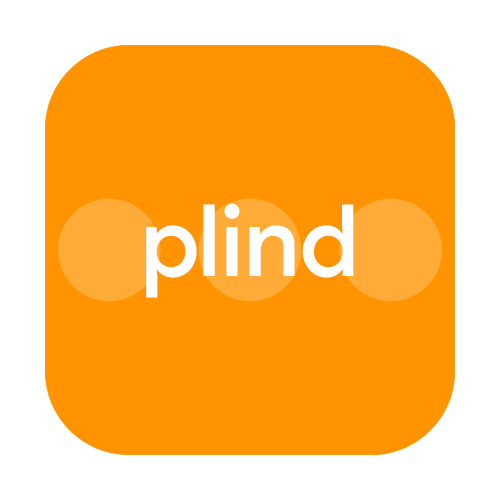
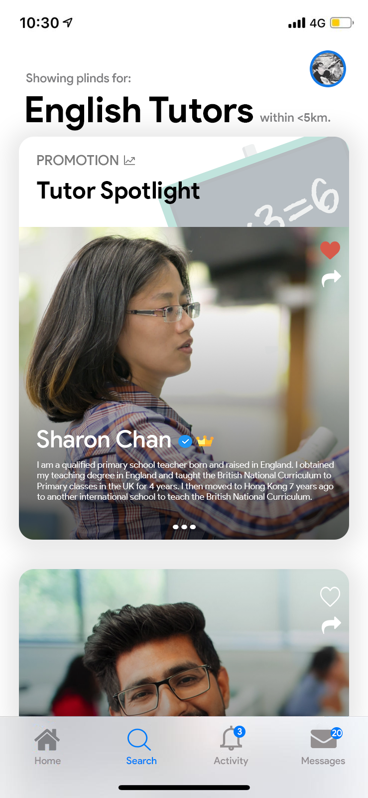
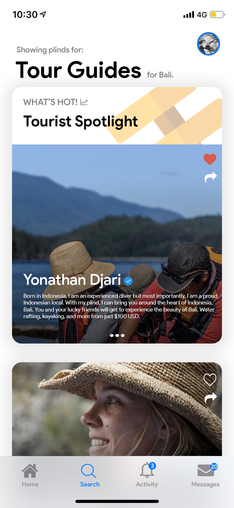

What are you passionate about?
Ultimately, apart from my interest in IT, I am very passionate about the world of business and economics. I do very much enjoy learning both very much. In my project, you may see a mix of both IT and business, very much like many tech companies nowadays.
What kind of IT innovation would you like to see?
I would like to see an app which allows freelancers to connect with consumers, as I believe this is missing in the industry. We've got one for drivers, places to stay at, but there isn't one for freelancers that is popular.
What project will help you develop the skills, experience and knowledge required to make you qualified for your ideal job?
My ideal job would be a software developer; I believe that by doing this project, it would prepare me to develop the skills needed to work in a software developing workplace one day. As throughout the project, I will only learn more about coding and go through trial and error.
Overview
My proposed project is a mobile app that aims to connect freelancers to customers, called Pind. A lot of freelancers rely on getting their business out there by word of mouth or Facebook. Freelancers have very limited resource to promote their business out there, and usually get silenced by more prominent firms. Options available right now either do not have sufficient user base or does not look well-regulated enough for users to trust. Plind will be available for any freelancers, and will feature three modes, default, which shows local options, virtual, shows services not needing physical presence, and travel mode shows different offerings oversees.
Motivation
The motive behind Plind comes from my personal interest in giving haircuts and living in a city where rent for retail shops are rocket high. An idea came up to my mind— how cool would it be to have a barber came to your house with the touch of a fingertip? This would help lower the price of each haircut while making it look a premium service. It would be a win-win for both the consumer and the barber. Even during the pandemic, this could work out as it could help people get essentials done while getting exposed to fewer people.
Another motivation came from my time growing up. In Hong Kong, it is prevalent for most kids to have one on one tutor. However, there isn't a proper place to find tutors. Most tutors are found by word of mouth or agencies, in which they charge a high amount of commission from both parties. A 2015 Study said that there are over 4.1 Million Freelancers here in Australia (Cox, 2018), and I believe this is the missing piece in which what the industry needs; the first thing that comes to mind when you need a car would be Uber, and a place to stay would be Airbnb. However, nothing comes up when you need to look for service done apart from Google.
Cox, C., 2018. How To Freelance Around The Globe: Australia. [online] The Freelancer. Available at: <https://contently.net/2018/11/07/resources/global-guides/freelance-globe-australia/> [Accessed 16 August 2020].
Description
'Plind' will be an app that helps connect freelancers to consumers directly. The app offers a crucial rating system, where users can leave a rating out of 5 and leave their comment on both consumer and freelancer's profile; this will provide a brief idea of what to expect for both the consumer and the freelancer. Different service offerings are to be shown on the top of user's feed using an algorithm which consists of highly rated freelancers, as well as the number of likes and order completed. It prioritises the rating system, as it will encourage freelancers to give their 110% and not lack work. In addition, this allows room for newcomers to come in and offer the same service without having to worry about being hushed by the earlier users. The app will focus on continually allowing newcomers to come in the market without a problem finding consumers. The search bar is key to connecting finding the right connection amongst the two users; therefore, a flexible filter option will be added, which consists of: the default option 'starred', which is based on our algorithm mentioned earlier, different price ranges, as well as nearby location, which will require users to enable location for us when opening the app for the first time. Having the opportunity to search for lower prices will be a key role in helping newcomers enter the market.
The app will feature different sections, a Virtual Mode as well as a Travel Mode. Virtual mode will be targetted to those who offer services in which a physical presence isn't needed, e.g., graphics design or video editing works. Location-based searching will be kept on as an optional to those who would like to support local freelancers. An exciting addition would be a travel mode. This would allow users to pick a country and look for different options offered, and this option is perfect for those offering tour guides or activities in different countries. For example, you can search for Surf instructors in Bali or Hiking tours in South Africa.
The app will provide flexibility for users across any regions and will feature a travel mode to those working in the hospitality and travel industry. For example, users can look for tour guides in Bali, and will see all the different offers of tours in Bali.
Some may argue Plind is similar to Craigslist. However, Plind will be regulated heavily. User profile are exposed for everyone to see, and each profile is to signup using their real names and birthdates. Additional badges will be given if users verify their profile using their real identity, which will be kept confidential. In addition to verification badges, different badges will be awarded for users to add onto their profile once milestones are hit, e.g., time spent on Plind.
Once users find what they want, they are to either reserve using the button provided or send a direct message to the freelancer where pricing and time flexibility and be discussed further. The reserve button will show a brief idea on when the freelancer is available. However, they will have to get a confirmation from the freelancer nonetheless. Plind will take 5% off of every order to fund a 24/7 customer service, which is easily accessible from the app. After an order has been completed, both parties will be asked to leave a rating, and an optional review.
Tools and Technologies
My approach to Plit would be using Adobe Photoshop to create the base UI. Ideally, Plind needs to focus on usability and UI design. The primary essential sector of the development would be app programming. A programming language is a written language in which instructs the computer to do work. In which for building an iOS app, the two more popular languages would be Objective-C and Swift. There are many open-source tools which helps make programming this app so much easier, such as XCode for iOS and Android Studio for Android.
A website would also be needed, which would require coding using HTML or PHP. App Testing Tools or Emulators would be essential to testing apps, as it would take many tries to tackle errors. Appium is a great tool to help stimulate app for both iOS and Android.
Skills Required
The skills necessary for this project would include writing code, going through trial and error, working with other developers, ability to use development tools, ability to design and cross-platform development.
I personally do not acquire most of these skills as I am relatively new to IT. Most of the skills mentioned are pretty feasible; however, instead will take time to learn. In terms of hardware, virtually all you need is a computer that can handle coding, as well as a smartphone, preferably both Android and iOS. In terms of software, most programming software is free and open to everyone without having to purchase. It includes an app developing tool, designing tools and emulators.
Outcome
The original problem was the lack of opportunity for freelancers to get their word out. Certain people had to go through agencies and pay expensive commission just to get customers. Plind helps relieve this issue, offering a comfortable solution for both consumers and freelancers.
Plind provides an easy A to B solution, and only requiring a middleman if there is an issue. If the project is successful, this will help countless people save time and money all through one platform. Freelancers would no longer have to pay unnecessary fees, and users can look what they're looking for at the tip of their finger.
Extra:
I really found this project interesting and went ahead and made basic mockup and a logo for it. Feel free to check it out and get a brief idea on what my project is about.
Plind's App Icon

Plind's Mockup
